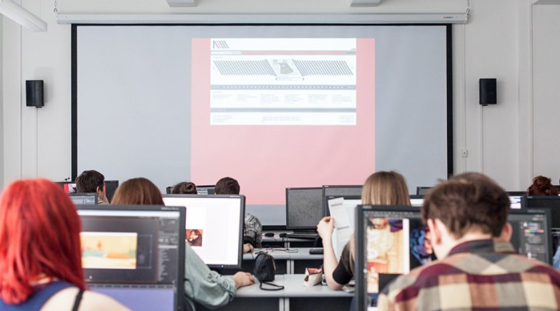

Вы поступили в Школу дизайна НИУ ВШЭ, но совсем не понимаете и даже не представляете, какой первый месяц ждёт вас на этом профиле
Первый месяц — время для того, чтобы познакомиться со всеми дисциплинами, научиться работать на каждой из них, а также понять, зачем нам каждая из них. Погружайтесь в работу сразу же, ничего не бойтесь, задавайте вопросы преподавателям, и тогда у вас всё будет получаться.
Adobe Illustrator (базовый уровень)
В течение первого месяца происходит обзор большинства основных инструментов и эффектов программы, а также отрабатываются приемы работы с ними.